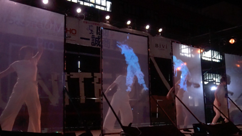
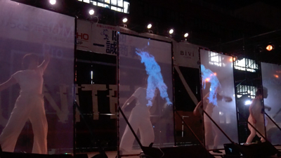

ゆらぎ -ダイジェスト
2019.11 / Digest Movie / Director, Cinematographer & Editor / 1min 45sec
 

人々の持つ日常とは、非日常とは、果たして。そしてその境界はどんなものであろう。ゆらぎを以て、世界の認識を問いかける。
Credits
- Director, Cinematographer, Editor : Tomoya Onuki
- Cinematographer : Yui Atarashi
- Producer : TParty Twitter
- Cast : 筑波大学ダンス部 Official HP
- Music : Shion Kaneko
- Special Thanks : リコージャパン / CTJ株式会社 / 筑波大学 学園祭実行委員会 Official HP